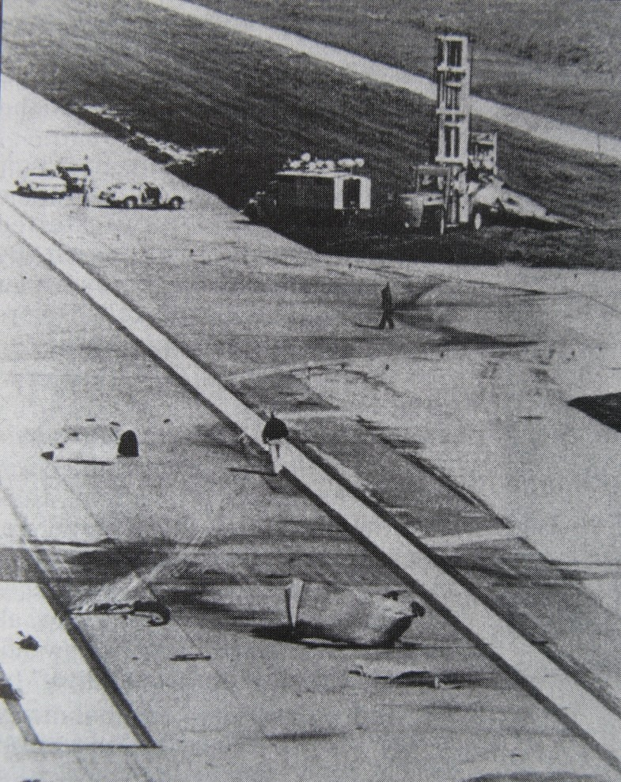
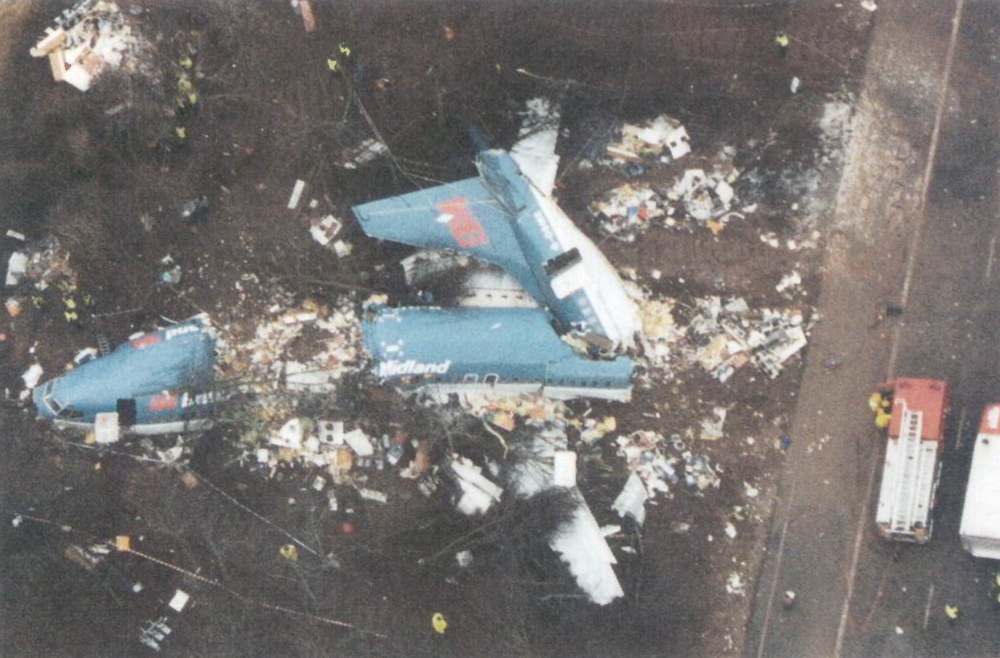
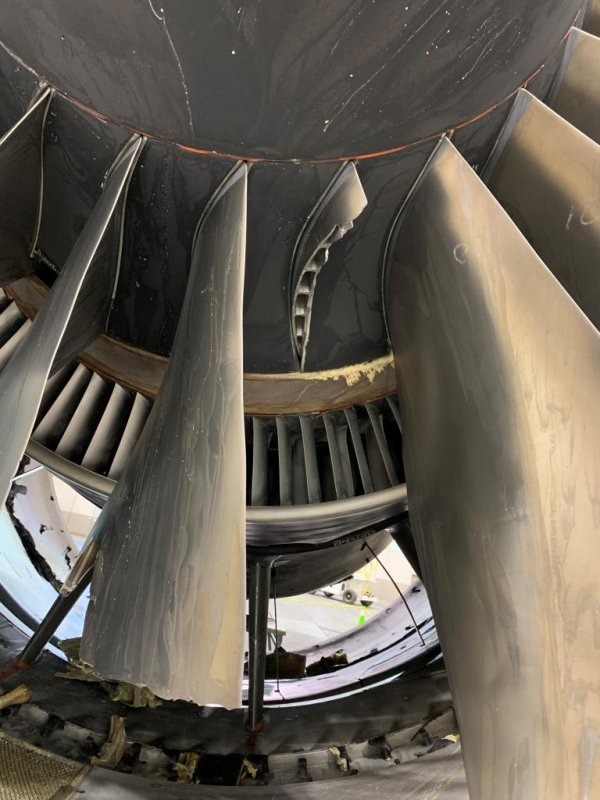

1 · Contexto
Las fallas de motor cuestan vidas y dinero

American 191 · 1979El motor y su pilón se desprenden al despegar, por daño de mantenimiento. 273 muertes.

Kegworth · 1989Un álabe del ventilador se fractura por fatiga y se apaga el motor sano. 47 muertes.

Qantas 32 · 2010Grieta por fatiga en un tubo de aceite: falla no contenida. Sin víctimas.

United 328 · 2021Álabe del ventilador agrietado por fatiga: falla del motor derecho. Sin víctimas.
10–20 mil USD
por hora con un avión en tierra por mantenimiento no programado (AOG); hasta 100 mil.
39 MDD
pérdida neta de Volaris en 2023, con 200 despidos, por problemas con motores.
El mantenimiento por calendario retira motores sanos antes de tiempo y no anticipa a los que se degradan rápido. Estimar la vida útil remanente (RUL) con los sensores permite intervenir según el estado real de cada motor.
P1 · Desempeño. ¿Un modelo con ventanas deslizantes supera a los notebooks públicos de Kaggle en la prueba oficial de los 4 subconjuntos?
P2 · Sensores. ¿Qué sensores anticipan la degradación de forma consistente y con sentido físico?
P3 · Condiciones. ¿Tomar en cuenta la condición de vuelo al preprocesar mejora FD002 y FD004?
Fotos: NTSB (AA191, UA328, dominio público); AAIB (Kegworth, OGL v1.0); ATSB (QF32, CC BY-SA 3.0 AU). Informes NTSB-AAR-79-17, AAIB 4/1990, ATSB AO-2010-089, NTSB DCA21FA085; Flying Magazine, “AOG: When an airplane can't fly”; Munguía (2023), El Financiero.
2